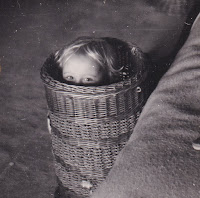
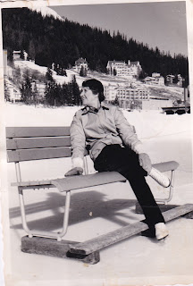

{kind=link}
This trouvaille is a cuboid cardboard box, 8 ½” square and 6” deep. I’ve no idea what it had have held originally. A teapot perhaps? It was tied with string and marked LETTERS / Old Letters (Family). I prepared myself for disappointment: business correspondence, school Sunday letters kept out of duty.
Inside there was a mass of letters, hundreds of them, many on blue airmail forms – I haven’t counted them all yet. I felt a thrill when the first letters I glimpsed were from my mother’s mother, the grandmother I’d never really known. It was more than I could cope with at that moment. I took a deep breath, closed the box and promised myself I would look again in the New Year....NOW.
One small section of letters had been separated from the rest by being stored in a half a brown paper package. I decided to read them first, 58 of them, mostly short, sometimes very brief indeed. The brevity of one of them – written on two pieces of scrappy notepaper about 4” x 2 ½” seemed eloquent in its own way:
{kind=link}
May 27th 1958
My darling Judikin, Excuse the paper. I am in my big armchair and it is all I can see at the moment. I don’t know whether this will reach you or if you are at (*indecipherable word). I completely love the snapshot you sent of Nikko. It is simply sweet and such a little smiling face. Tell George that he is a very clever photographer. I wish I knew where you were. It is sunny and really quite warmish here except if we go down to the promenade in the wind. Best love my darling. Hope all is well with you, Ma
 |
| Was this the photo? |
{kind=link}
This small batch of letters is not well sorted; the researcher in me longs to have them tagged and ordered, but the outline of their story is clear. Most were written in 1958, during the last 15 months of her life. A few have strayed in from 1957. Then, she was writing home from SS Uganda, the smart passenger liner owned by the British India Steam Navigation Company, which plied the East Africa route from Mozambique to London. My grandmother was at ease with long haul travel. She been born in New Zealand, had a brother in the colonial service who she frequently visited, other family members farming in Kenya and Uganda. When my grandfather had been alive, they’d travelled to North Africa
and Indonesia. They rode, skied, skated.
 |
| The favourite photo which my mother kept of her mother |
{kind=link}
Now it was more that she could do to get out of her armchair. Using a telephone was impossible because she’d lost the ability to speak clearly. She drooled, had trouble swallowing her food and was frequently unable to retrieve a simple word. One letter contains a description of her visiting a post office and finding herself defeated by the word ‘envelope’. For a woman who been a WW1 nurse, then managed a large household with 8-10 staff and six children, plus frequently visiting nephews whose parents were abroad, this must have been hard. I sense she felt humiliated by her dribbling and her inability to speak. The only visitors she wants are her closest family. She particularly longs for my mother and imagines her sailing into Ramsgate harbour or arriving unannounced at the nursing home: ‘Will the door just open and you walk in?’ I am guessing there are many lonely people who share that dream. I feel rather that she has just walked into my life, speaking from inside that cardboard box.
Had she had a stroke? Probably not. Her doctor has told her she has a problem with ‘central speech organisation’. I googled this as ‘dysphonia’, together with her difficulty swallowing, her problems with word retrieval and her unsteadiness. Was she developing Parkinsons or Motor Neurone Disease? Was it a ‘functional neurological condition’ (sometimes a synonym for 'hysteria')? She had suffered a terrible tragedy and breakdown earlier in her life, were these symptoms physical manifestations of earlier trauma?
This small initial sample of letters show her reduced to basics. She writes about the weather, about hair appointments, shares news of other family members. She is longing for 'Judikins', yet she knows how difficult it is for Mum to travel regularly from Woodbridge in Suffolk to Ramsgate in Kent with we two little ‘Tippits’, myself and my brother, aged four and 2 ½. Having brought up her own family with nannies, nursemaids and kitchen staff, she is constantly anxious about Mum managing ‘without any help’. She makes plans to put Mum up in Ramsgate Hotel and hire a nursemaid to look after us, so Mum can have a rest. (She notices that Julia - that's me - is strongly resistant to any such plan to divert her mother's attention...)
She writes every couple of days it seems, though not all letters are dated. They’re like phone calls, made when you haven’t really anything to say but you simply need to hear the other person’s voice.
As writing becomes harder, she buys a second hand typewriter and types one-fingered, pressing the keys so hard that ‘my awful syllver (saliva) is dripping all over the place and all my hairpins are falling out.'
I don’t know whether the letters in this brown-paper package represent a deliberate selection, so I have no idea whether or not the last in this batch is her final letter. In it she uncharacteristically turns down an invitation to spend time with Mum and Nick: ‘I don’t feel up to anything. I’m sorry darling. Having a bath in the morning is the limit for me.’ She sounds defeated. She died in March 1959.
At the top of the cardboard box I found a note from Mum which she'd written to my youngest brother, Ned, and I, as her executors. She tells us that the whole box is filled with family letters which she cannot bring herself either to read or to dump. ‘These ones make me feel so sad although, or perhaps because, they are just loving letters from my parents and brothers.’ (my italics)
{kind=link}
I also feel sad to realise that I have almost no memory of her. Previously I had assumed this was because she was ill and I never saw her. Now I discovered that I was a regular part of the visits and even received a letter or two of my own. Apparently I also 'wrote' to her -- which I'm glad to hear. She obviously cared about me -- and loved me -- even if she didn't necessarily approve of my behaviour towards temporary nannies, nursemaids or mother's helps who threatened to divert my mother's attention.
There are hundreds more letters yet to be read. Ned hasn’t seen the box yet – he was born in the autumn of 1959 so he never met our grandmother. I think he will agree that by keeping these safe and passing them on, Mum has left us an astonishing gift.